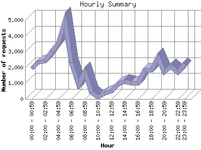

The Hourly Summary identifies the level of activity broken down by each hour. Remember that one page hit can result in several server requests as the images for each page are loaded. This summary also compares the level of activity during working hours and after hours as a total for the report time frame.

| Hour | Number of requests | Number of page requests | |
|---|---|---|---|
| 1. | 00:00 - 00:59 | 1,939 | 127 |
| 2. | 01:00 - 01:59 | 2,313 | 140 |
| 3. | 02:00 - 02:59 | 2,416 | 164 |
| 4. | 03:00 - 03:59 | 3,012 | 170 |
| 5. | 04:00 - 04:59 | 3,530 | 145 |
| 6. | 05:00 - 05:59 | 4,947 | 278 |
| 7. | 06:00 - 06:59 | 2,263 | 100 |
| 8. | 07:00 - 07:59 | 925 | 67 |
| 9. | 08:00 - 08:59 | 1,710 | 38 |
| 10. | 09:00 - 09:59 | 414 | 37 |
| 11. | 10:00 - 10:59 | 97 | 33 |
| 12. | 11:00 - 11:59 | 339 | 48 |
| 13. | 12:00 - 12:59 | 520 | 43 |
| 14. | 13:00 - 13:59 | 938 | 90 |
| 15. | 14:00 - 14:59 | 1,096 | 89 |
| 16. | 15:00 - 15:59 | 1,005 | 67 |
| 17. | 16:00 - 16:59 | 1,020 | 67 |
| 18. | 17:00 - 17:59 | 1,825 | 134 |
| 19. | 18:00 - 18:59 | 1,841 | 95 |
| 20. | 19:00 - 19:59 | 2,619 | 94 |
| 21. | 20:00 - 20:59 | 1,705 | 123 |
| 22. | 21:00 - 21:59 | 2,052 | 125 |
| 23. | 22:00 - 22:59 | 1,689 | 116 |
| 24. | 23:00 - 23:59 | 2,209 | 216 |
| Work Hours (8:00am-4:59pm) | 7,139 | 512 | |
| After Hours (5:00pm-7:59am) | 35,285 | 2,094 | |
This report was generated on November 26, 2013 04:33.
Report time frame June 15, 2013 22:34 to November 25, 2013 19:34.
| Web statistics report produced by: analog 5.1 / Report Magic 2.21 |